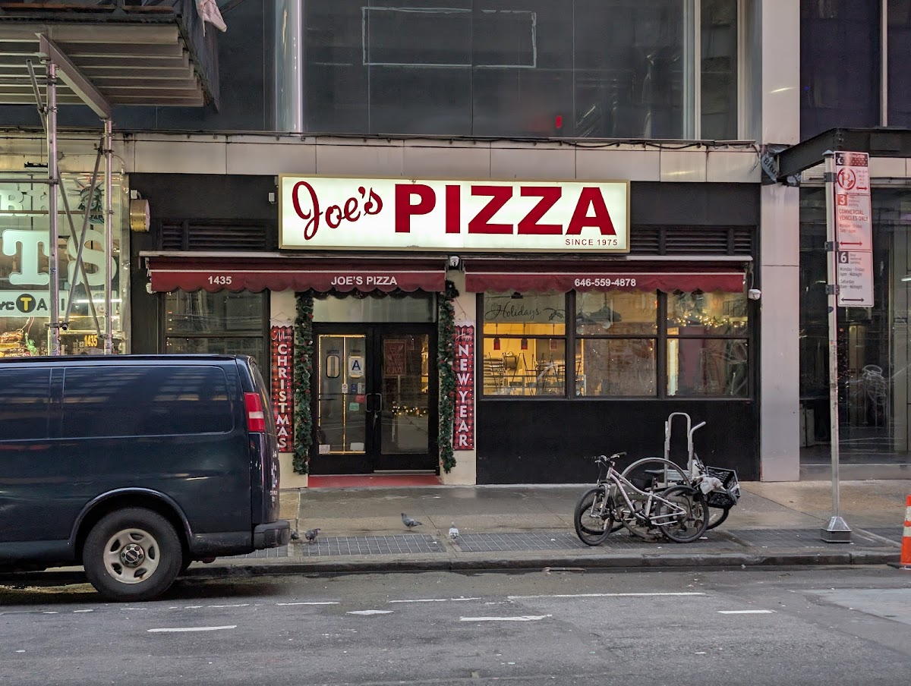
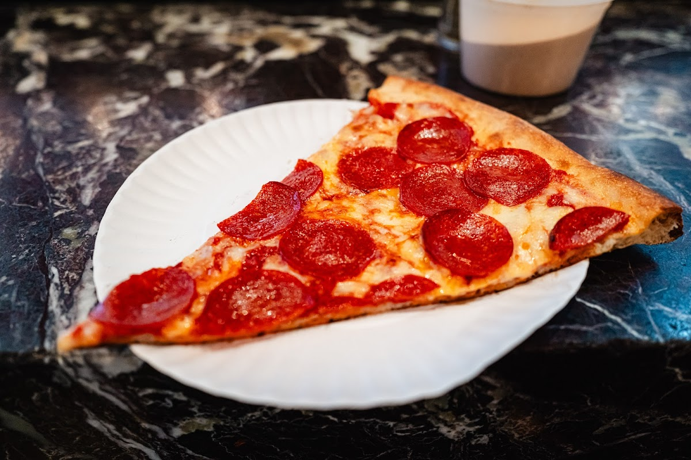
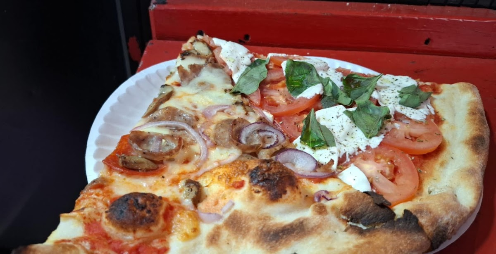
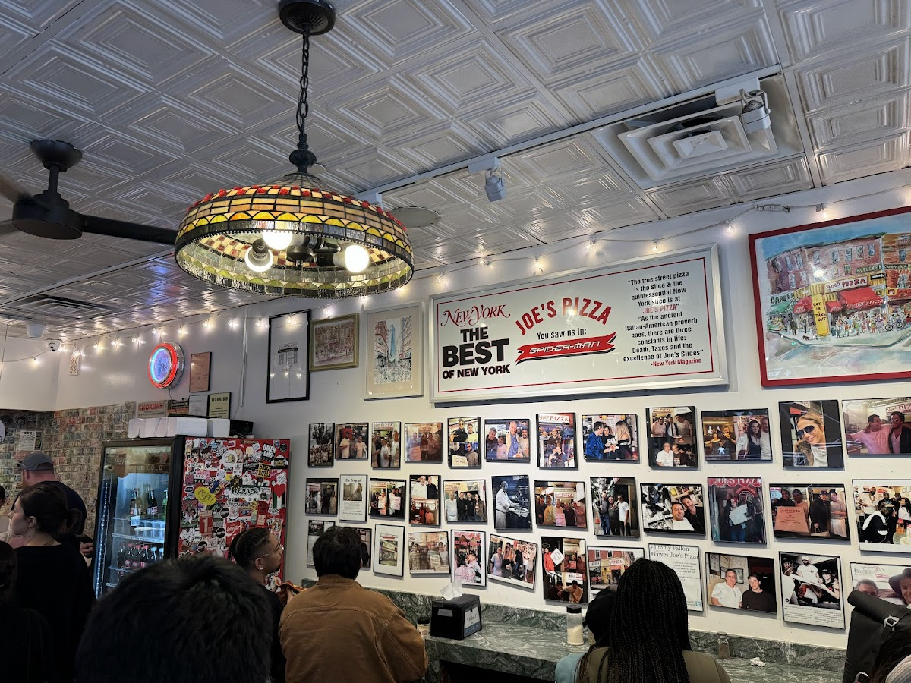
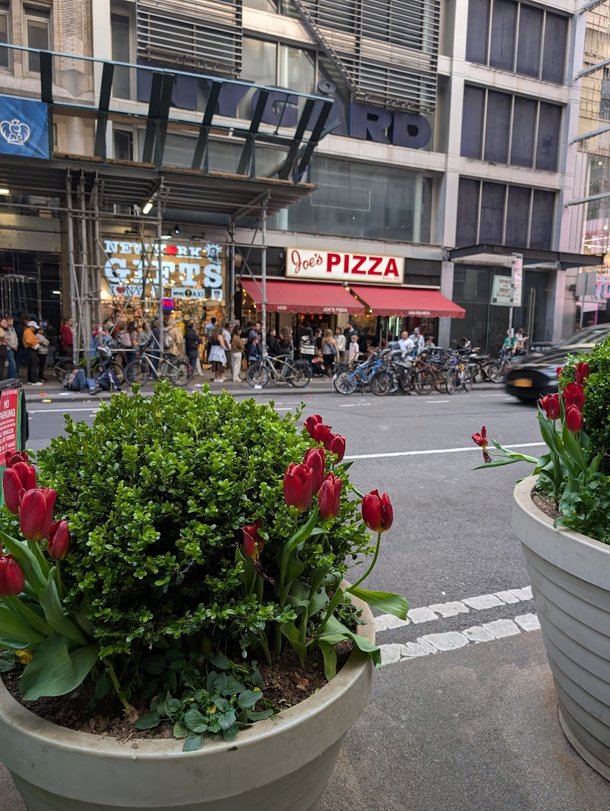

Streets
Broadway Between 40th and 17th
A section of Broadway in Manhattan, known for its pedestrian-friendly design and public spaces.
Background
This stretch of Broadway was reimagined in the early 21st century as part of New York City's efforts to create more pedestrian-friendly urban environments. The project, led by Janette Sadik-Khan, transformed parts of Broadway into public plazas, enhancing the street's role as a cultural and commercial hub.
Original AI-assisted background; not independently verified.
From the original map
janette sadik-khan's opus
Check current access before visiting. A place on this map is not necessarily open to the public.
Nearby places
Straight-line distances, not walking routes.
Discussion & corrections





40.75257, -73.98747 · Explore the surrounding area ↗